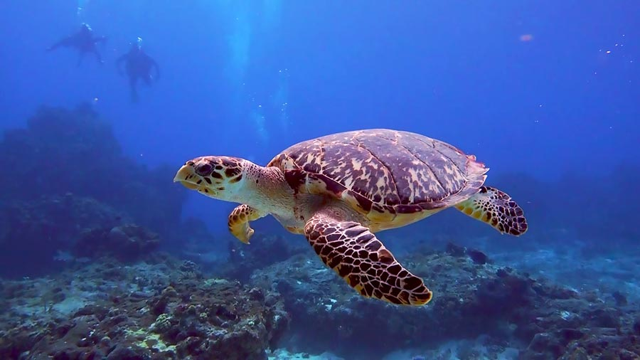

Tortugas Carey - Candy
Esta página incluye información básica sobre las tortugas carey
Comprotamientos básicos
- Instintivo
- Aprendido
- Impronta
- Social
- Territorial
- Reproductivo
- Migratorio
- De defensa
Datos curiosos
- Su madurez sexual empieza a los 20 o 40 años
- Son omnívoros
- Mantienen la respiración por horas
Imagen de ejemplo

Ir al vinculo
Video Informativo
Video de Youtube